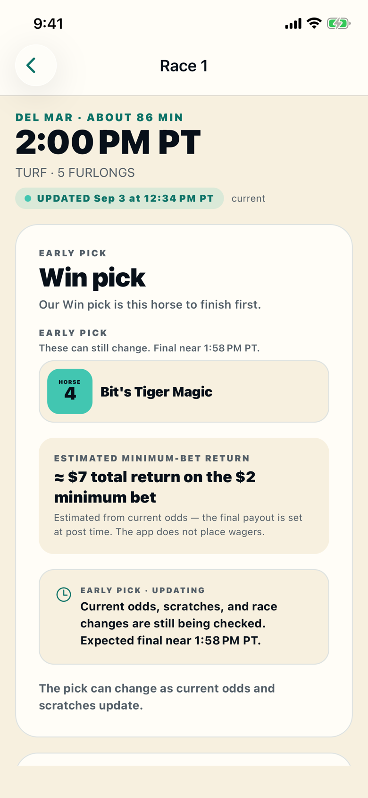
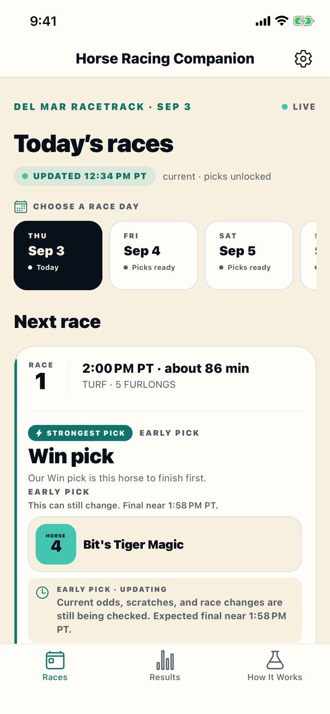

DEL MAR FALL MEET · NOVEMBER 6–29, 2026
Be ready when Bing Crosby opens.
Del Mar's fall meet starts Friday, November 6. Horse Racing Companion will publish one data-driven pick for every race, with the reasoning, saved before post and kept beside the official result.
Summer 2026 pass? Bing Crosby is already yours. Open the app and use Restore Purchases in Settings. No additional charge.

BEFORE OPENING DAY
Set up once, then just show up.
Three steps before Friday, November 6 and the meet takes care of itself. Picks open about two hours before first post each racing day.
1. Download the app
Free from the App Store. Race cards, odds, results, and past picks are free with no account.
2. Restore if you had a summer pass
Settings → Restore Purchases. Your Bing Crosby access is included at no additional charge.
3. First racing day is free
Three complimentary racing days for new users. Use one on opening day and see every pick on the card.

2026 SUMMER RESULTS
What the picks did last meet
Across 13 tracked cards, August 20 through closing day on September 7: 47 of 105 final pre-race picks matched their published result type, a pick-match rate of 44.8%.
Every counted pick was saved before post and checked against official results. This small sample does not establish profitability or a betting edge. Bing Crosby picks will be tracked and published the same way.
WHY IT EXISTS
Built by someone who could not figure out what to bet
Del Mar was a great day out with one frustrating part: the betting window. I wanted the other kind of reason. Public odds, past Del Mar results, trainer and jockey records, and post position, weighed the same way for every race. So I built it.
RACE RESPONSIBLY
Only wager what you can afford to lose
For adults of legal wagering age, where wagering is lawful. Horse Racing Companion does not accept or place wagers. Read the 18+ and responsible-use guidance. If gambling is causing concern, the National Council on Problem Gambling offers confidential help.
OPENING DAY
Friday, November 6. First post at Del Mar.
Three racing days free · No wagering · 18+